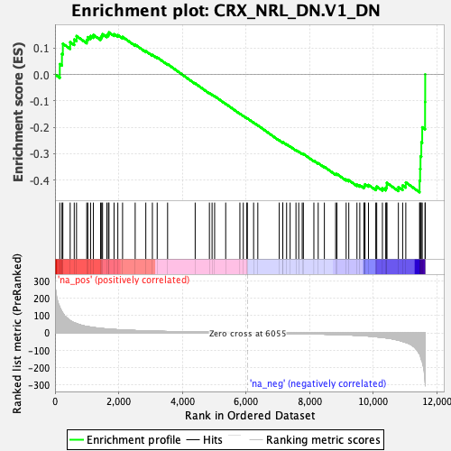
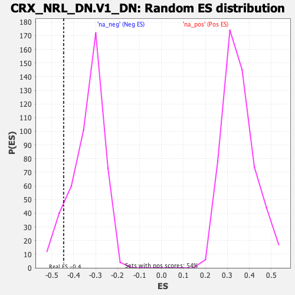

| | | Dataset | DE_genes |
| Phenotype | NoPhenotypeAvailable |
| Upregulated in class | na_neg |
| GeneSet | CRX_NRL_DN.V1_DN |
| Enrichment Score (ES) | -0.44582203 |
| Normalized Enrichment Score (NES) | -1.3267705 |
| Nominal p-value | 0.08874459 |
| FDR q-value | 0.20080753 |
| FWER p-Value | 0.997 |
Table: GSEA Results Summary

Fig 1: Enrichment plot: CRX_NRL_DN.V1_DN
Profile of the Running ES Score & Positions of GeneSet Members on the Rank Ordered List
| SYMBOL | RANK IN GENE LIST | RANK METRIC SCORE | RUNNING ES | CORE ENRICHMENT | | 1 | PRDM1 | 150 | 144.344 | 0.0392 | No |
| 2 | TNC | 218 | 121.992 | 0.0775 | No |
| 3 | FRMD6 | 246 | 113.834 | 0.1163 | No |
| 4 | RNF149 | 476 | 71.147 | 0.1222 | No |
| 5 | ADGRA2 | 604 | 58.215 | 0.1322 | No |
| 6 | SGCE | 676 | 53.284 | 0.1453 | No |
| 7 | RERG | 997 | 37.048 | 0.1310 | No |
| 8 | FMN1 | 1031 | 35.981 | 0.1412 | No |
| 9 | HS3ST1 | 1118 | 33.306 | 0.1458 | No |
| 10 | PTPN13 | 1206 | 31.173 | 0.1495 | No |
| 11 | JAM3 | 1431 | 25.922 | 0.1395 | No |
| 12 | GREB1 | 1466 | 25.356 | 0.1457 | No |
| 13 | RASA2 | 1494 | 24.898 | 0.1524 | No |
| 14 | SLC26A4 | 1628 | 22.710 | 0.1491 | No |
| 15 | TMEM87A | 1678 | 21.831 | 0.1527 | No |
| 16 | NTNG2 | 1695 | 21.568 | 0.1591 | No |
| 17 | ZNF146 | 1855 | 19.495 | 0.1524 | No |
| 18 | METRN | 1974 | 18.338 | 0.1489 | No |
| 19 | C14orf132 | 2123 | 16.728 | 0.1421 | No |
| 20 | TNPO2 | 2519 | 13.538 | 0.1128 | No |
| 21 | CLIC4 | 2853 | 11.327 | 0.0881 | No |
| 22 | RAB27B | 3060 | 9.995 | 0.0739 | No |
| 23 | GDPD3 | 3211 | 9.362 | 0.0643 | No |
| 24 | PDIA3 | 3538 | 7.993 | 0.0390 | No |
| 25 | NFKB1 | 4405 | 5.255 | -0.0339 | No |
| 26 | TCAM1P | 4852 | 4.155 | -0.0710 | No |
| 27 | KIF5C | 4936 | 3.988 | -0.0767 | No |
| 28 | TNNC2 | 5016 | 3.816 | -0.0822 | No |
| 29 | TSPAN33 | 5364 | 3.200 | -0.1111 | No |
| 30 | CITED1 | 5810 | 2.496 | -0.1486 | No |
| 31 | SMPDL3A | 5917 | 2.361 | -0.1569 | No |
| 32 | RREB1 | 6028 | 2.221 | -0.1657 | No |
| 33 | CAP1 | 6044 | 2.195 | -0.1662 | No |
| 34 | RGL3 | 6241 | -2.476 | -0.1822 | No |
| 35 | SWSAP1 | 6373 | -2.679 | -0.1926 | No |
| 36 | AP2B1 | 7047 | -3.822 | -0.2494 | No |
| 37 | NR4A1 | 7157 | -4.002 | -0.2574 | No |
| 38 | CRYBG3 | 7159 | -4.009 | -0.2560 | No |
| 39 | GGACT | 7278 | -4.238 | -0.2647 | No |
| 40 | RIOX2 | 7389 | -4.512 | -0.2726 | No |
| 41 | SLC25A13 | 7573 | -4.937 | -0.2866 | No |
| 42 | LRRC4 | 7659 | -5.148 | -0.2921 | No |
| 43 | ELOVL2 | 7769 | -5.453 | -0.2996 | No |
| 44 | SPINT1 | 7805 | -5.547 | -0.3006 | No |
| 45 | BAX | 8135 | -6.606 | -0.3266 | No |
| 46 | RNF25 | 8271 | -7.035 | -0.3358 | No |
| 47 | RBP7 | 8465 | -7.771 | -0.3497 | No |
| 48 | GABRA3 | 8819 | -9.404 | -0.3768 | No |
| 49 | WWC1 | 8859 | -9.616 | -0.3767 | No |
| 50 | PRMT1 | 9149 | -11.629 | -0.3975 | No |
| 51 | C11orf52 | 9232 | -12.189 | -0.4002 | No |
| 52 | NSG1 | 9489 | -14.119 | -0.4172 | No |
| 53 | QSOX1 | 9578 | -14.952 | -0.4194 | No |
| 54 | MYBPH | 9708 | -16.362 | -0.4246 | No |
| 55 | NECTIN3 | 9727 | -16.658 | -0.4202 | No |
| 56 | PTER | 9742 | -16.797 | -0.4153 | No |
| 57 | FZD5 | 9851 | -18.337 | -0.4180 | No |
| 58 | PNP | 10081 | -22.177 | -0.4298 | No |
| 59 | ARPC3 | 10110 | -22.746 | -0.4240 | No |
| 60 | RASGRF2 | 10289 | -26.285 | -0.4299 | Yes |
| 61 | TRAPPC3 | 10393 | -28.678 | -0.4285 | Yes |
| 62 | ABCC9 | 10426 | -29.318 | -0.4206 | Yes |
| 63 | HEBP1 | 10427 | -29.341 | -0.4100 | Yes |
| 64 | GRIK2 | 10791 | -42.181 | -0.4262 | Yes |
| 65 | ADRB2 | 10925 | -49.269 | -0.4199 | Yes |
| 66 | TNFRSF12A | 11024 | -55.108 | -0.4085 | Yes |
| 67 | GSDME | 11457 | -120.835 | -0.4022 | Yes |
| 68 | SDC4 | 11474 | -128.219 | -0.3572 | Yes |
| 69 | ELOVL7 | 11486 | -133.922 | -0.3098 | Yes |
| 70 | BAMBI | 11512 | -152.752 | -0.2568 | Yes |
| 71 | NTN4 | 11540 | -164.002 | -0.1998 | Yes |
| 72 | KAZN | 11630 | -284.984 | -0.1046 | Yes |
| 73 | PAM | 11634 | -290.661 | 0.0002 | Yes |
Table: GSEA details [plain text format]

Fig 2: CRX_NRL_DN.V1_DN: Random ES distribution
Gene set null distribution of ES for CRX_NRL_DN.V1_DN